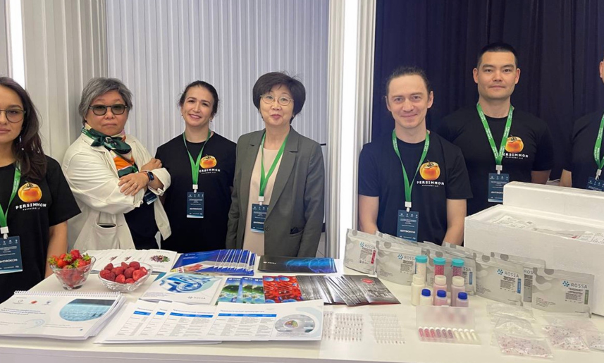

Технологии лиофилизации NAAT-наборов для диагностики зоонозных инфекций
О проекте
Проект направлен на разработку технологии производства лиофилизированных NAAT-наборов для диагностики зоонозных инфекций в формате гранул с возможностью последующего масштабирования через лицензирование или экспорт ОЕМ-продуктов.
Проблема
- Недостаточная диагностика зоонозов в развивающихся странах (до 80% инфекций остаются недиагностированными)
- Высокие расходы на холодовую цепь доставки и хранения реагентов
- Слабая лабораторная инфраструктура в сельской местности и развивающихся странах
Решение
- Лиофилизированные гранулы "всё в одном" с длительным сроком хранения (до 24 мес. при +40°С)
- Простота использования без необходимости холодового хранения
- Интеграция стандартов "One Health" ВОЗ и FAO по борьбе с зоонозами
Технологическое решение
Лиофилизированные гранулы ("всё в одном") с длительным сроком хранения (до 24 мес. при +40°С), простотой использования без необходимости холодового хранения. Технология интегрирует стандарты "One Health" ВОЗ и FAO по борьбе с зоонозами.
Ключевые преимущества
Длительный срок хранения
До 24 месяцев при температуре до +40°С без необходимости холодовой цепи
Простота использования
Формат "всё в одном" снижает требования к квалификации персонала
Международные стандарты
Соответствие стандартам "One Health" ВОЗ и FAO по борьбе с зоонозами
Универсальность
Возможность применения в условиях ограниченной инфраструктуры
Текущий статус проекта
R&D завершен
Разработаны прототипы NAAT-наборов, технологии валидированы
Оформление IP
Начато оформление интеллектуальной собственности, ожидается заключение лицензионного договора с ROSSA
Переговоры о масштабировании
Активные переговоры о масштабировании через экспортные продажи (Казахстан, Кыргызстан, страны Азии и Африки)
Планы по развитию
Исследования и доработки
Масштабное клиническое исследование совместно с АБР для подтверждения эффективности технологии в различных климатических условиях и при различных инфекциях.
Коммерциализация
Автоматизация производства и поддержка ОЕМ-продуктов для экспорта. Снижение логистических расходов до 70%, уменьшение доли испорченных товаров и повышения стабильности качества диагностики.
Дорожная карта проекта
Ожидаемые результаты
Выход на рынки СНГ
2027 год
Выход на глобальные рынки
2029 год
Снижение логистических расходов
До 70%
Устойчивость решения
Создание доступной системы диагностики зоонозных инфекций для развивающихся стран